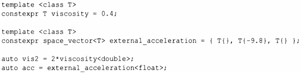
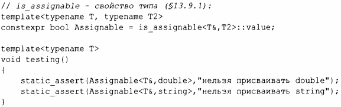

⇐6.4 Шаблонные механизмы 6.4.2 Псевдонимы⇒
Когда мы используем тип, нам часто нужны константы и значения этого типа. Это, конечно, имеет место и когда мы используем шаблон класса: когда мы определяем С<Т>, нам часто нужны константы и переменные типа Т и других типов, зависящих от Т. Вот пример из динамического моделирования ЖИДКОСТИ [19]:
Здесь space vector представляет собой трехмерный вектор. Естественно, в качестве инициализаторов можно использовать произвольные выражения подходящего типа:
После нескольких значительных изменений эта идея стала основой определения концептов (§7.2).